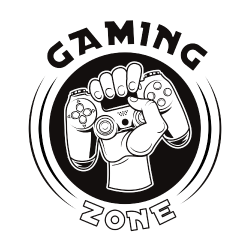

A very dedicated fan website to discussing Final Fantasy 9 and providing some in-depth insight into the game
It's interesting to think about this game's history. In the days of old, Final Fantasy when the developers were making the first game in the franchise they had never actually intended this to be a series. Sakaguchi called it Final Fantasy as he thought it would be the last game he ever really made. The devs of Square had made a lot of games but just were not very successful as a company. Then when the first game in the franchise was released it was a sprawling massive success and completely revitalized them. To think the franchise is pretty much up to number 16 at this point in time is insane to reflect upon how many have been made. Although they're not really directly connected as the games are very much standalone with each entry. Square did a major change up coming off the last batch of final fantasy games before entry 9. Number 9 was a return to roots for them after veering off into a more cyberpunk science fiction blended direction with Final Fantasy 7. They went back to traditional fantasy, which makes it one of the most stand out and more memorable games in the franchise.
Generally speaking it follows the traditional style of turn based rpgs where you take turns in combat and it is similar to what the franchise has used in previous iterations. Combat is determined with the ATB gauge, short for the Active Time Battle system. Each character must wait till the gauge is full before taking their turn and then they can proceed to do an action, whether it's using an item, attacking or defending. Characters with a higher speed stat will have a faster filling gauge so it will be their turn sooner.
You may have 4 characters in combat at a time. On the world map you walk around in, depending on how an encounter is approached will affect the flow of battle with an enemy you see there. You can either ambush the enemy from the back when you walk into them which will give you an advantage in battle with your gauges being full from the start or if the enemy manages to pre-emptively ambush you that means you're in trouble with them getting the opportunity to strike first. Being ambushed will also mess up your party formation and your rows will be reversed. Row formations whether a party member is placed at a back or front row can determine how much damage they do with their regular physical attacks. There are two modes of attack usually with magic or physical. Being placed at the back row will reduce the amount of damage a party member will take however it will also reduce any physical damage they do from there. The characters will have a variety of skills and abilities which range can be passive to buff your own party's stats or actively attacking the enemy and a wide range of status effects can be afflicted to hinder someone. When a party member gets K'O'ed and their HP drops to zero, they can still be revived through an ability a character has or items. You may also flee and run away from a battle, although that may not always be 100% successful and you can't flee from boss encounters.
Trance is another game mechanic where you can deal massive damage to the enemy or buffs with a character that can dole out a special move when in this temporary state. It's determined by a Trance gauge where it will slowly fill up as the characters are getting damaged. You gain experience towards leveling up to improve your stats and money after each and every battle. There is a handy menu screen where you can also view your stats, experience points, items, money and abilities. You can also swap out party members from there as well. Certain equipment when you use it repeatedly can also grant abilities and level them up. Outside of combat you'll be visiting various objective locations to progress the story and there is a ton of exploration to do on the world map with the towns and dungeons around. Tons of NPC characters to talk to and going around to stores to better equip your characters with items and equipment to purchase. There is a crafting system as well where you can make better items by synthesizing the required materials you pick up along the way. There's various side quests to do and other extra challenges for the player.